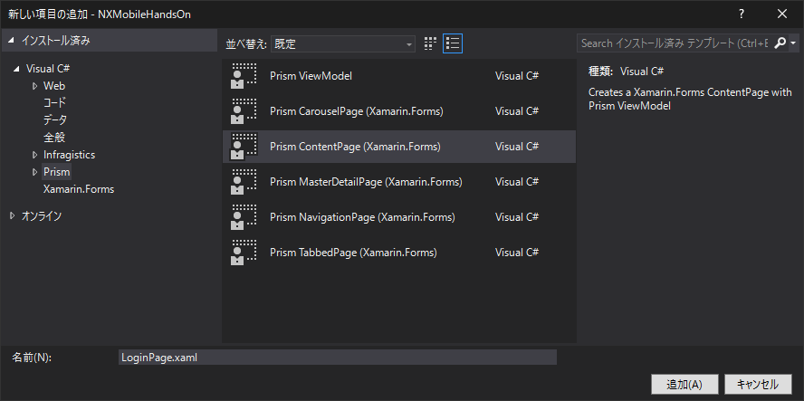

画面 LoginPage と MenuPage を作ります。
アプリを起動すると、ログイン画面 LoginPage が開き、アカウントを入力しログインに成功すると MenuPage に遷移する、というイメージです。
LoginPage には、入力欄 会社コード ユーザーID パスワード ログイン日付 と ログイン用のボタンを用意します。
ログインボタンを押すと入力値の検証がされ、ValidであればNXのログインサービスを呼び出します。
PCLプロジェクトの Views フォルダを右クリックし 追加 > 新しい項目 を選択してください。
新しい項目の追加画面にて、Visual C# > Prism > Prism ContentPage (Xamarin.Forms) を選択してください。
またファイル名は LoginPage.xaml とし、追加 でファイルを作成してください。
（ファイル名はこの通りにしてください）

Views フォルダの中に LoginPage.xaml が作成されると同時に、ViewModels フォルダの中に LoginPageViewModel.cs ファイルが生成されたことを確認してください。
特に設定をしないと、アプリの実行時にはプロジェクト作成時に自動生成された MainPage が表示されます。
今回は起動時に LoginPage を表示したいので設定を変更します。
App.xaml.cs を開いてください。（App.xaml を展開するとあります）
OnInitialized メソッドの NavigationService.NavigateAsync の処理を以下のように書き換えてください。
NavigationService.NavigateAsync("NavigationPage/LoginPage");これで起動時には LoginPage が表示されるようになります。
MainPage は使用しないので、ついでに RegisterTypes メソッド内の処理から MainPage の行を削除しておきましょう。
これで、App.xaml.csの中身は以下のようになっているはずです。
using Prism.Unity;
using NXMobileHandsOn.Views;
using Xamarin.Forms;
namespace NXMobileHandsOn
{
public partial class App : PrismApplication
{
public App(IPlatformInitializer initializer = null) : base(initializer) { }
protected override void OnInitialized()
{
InitializeComponent();
NavigationService.NavigateAsync("NavigationPage/LoginPage");
}
protected override void RegisterTypes()
{
Container.RegisterTypeForNavigation<NavigationPage>();
Container.RegisterTypeForNavigation<LoginPage>();
}
}
}ログインページに部品を配置していきます。
LoginPage.xaml を開いてください。
今回は StackLayout を使用して画面を組み立てます。
XAMLの <ContentPage> の中に、<StackLayout> を記述してください。
<StackLayout>
</StackLayout>会社コード ユーザーID パスワード の入力コントロール <Entry> をそれぞれ配置してください。
また、パスワード欄には IsPassword="True" プロパティを指定してください。これを指定することで、アプリ画面上で入力値が「***」のように表示されます。
<StackLayout>
<Entry x:Name="EntryKaiCode" Placeholder="会社コード" />
<Entry x:Name="EntryUserId" Placeholder="ユーザーID" />
<Entry x:Name="EntryPassword" Placeholder="パスワード" IsPassword="True" />
</StackLayout>ログイン日付 を選択するためのコントロール DatePicker を配置してください。
DatePicker では、アプリ画面でコントロールを選択すると、OSに組み込まれた日付選択機能が表示されます。
<StackLayout>
<Entry x:Name="EntryKaiCode" Placeholder="会社コード" />
<Entry x:Name="EntryUserId" Placeholder="ユーザーID" />
<Entry x:Name="EntryPassword" Placeholder="パスワード" IsPassword="True" />
<DatePicker x:Name="DpLoginDate" Format="yyyy/MM/dd" />
</StackLayout>最後にログインボタンを配置します。
<StackLayout>
<Entry x:Name="EntryKaiCode" Placeholder="会社コード" />
<Entry x:Name="EntryUserId" Placeholder="ユーザーID" />
<Entry x:Name="EntryPassword" Placeholder="パスワード" IsPassword="True" />
<DatePicker x:Name="DpLoginDate" Format="yyyy/MM/dd" />
<Button x:Name="BtnLogin" Text="ログイン" />
</StackLayout>デバッグを開始して、画面の表示を確認します。
以下の通りの画面が表示されれば成功です。